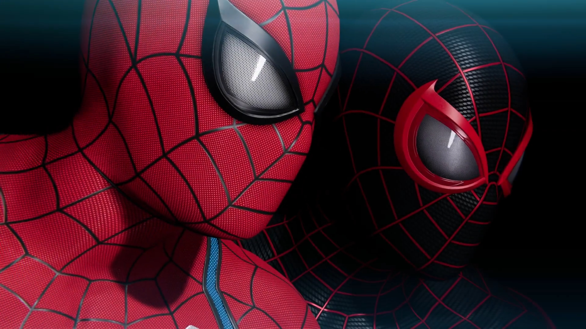
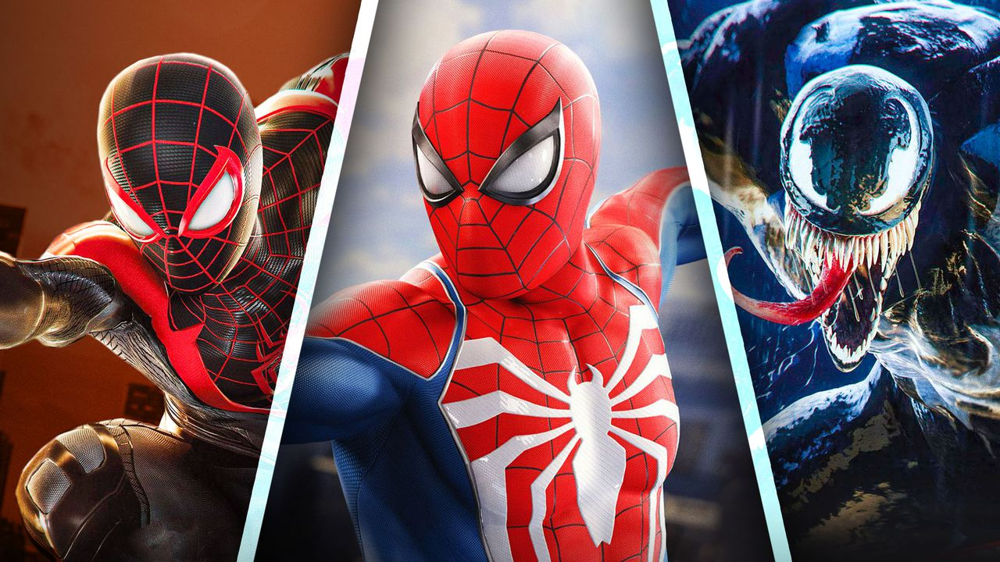

Story

In my opinion has Spider-man 2 a great story. It starts of with Miles Morales
and Peter Parker. Both struggles with their own personal, but they will soon
have much bigger problem. In this great adventure they meet on Kraven the
Hunter who wants a worthy death and go around killing Spider-mans old foes.
They also have another problem with Venom/Harry who is Peter Parkers
old friend. Hop in this great adventure and play epic boss battles and enjoy
this fantastic story.